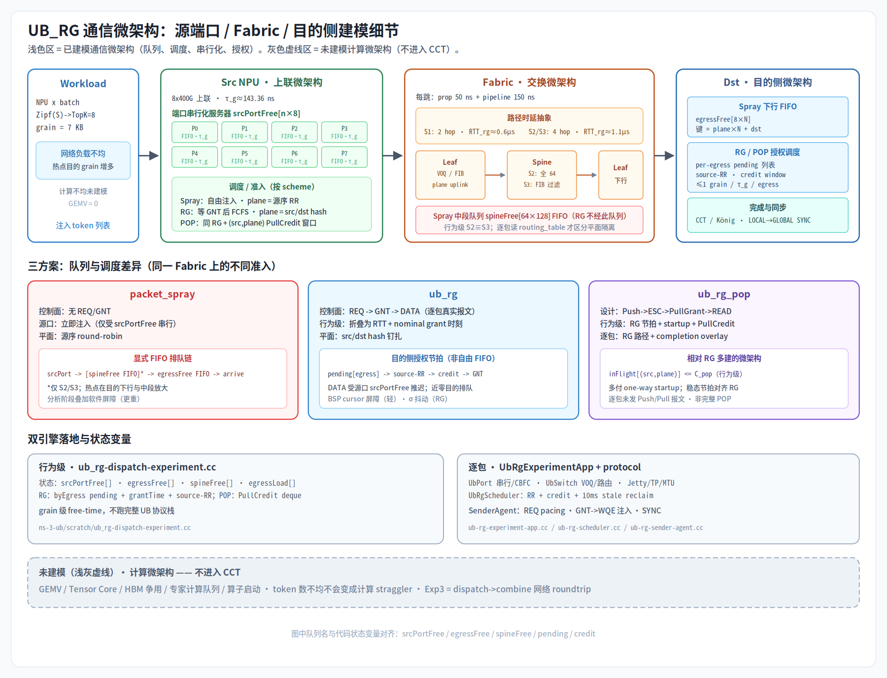

评估日期：2026-07-21
仓库基线：dyn_latency@f1396b27，ns-3-ub@742b5b1，两者均含未提交修改
评估对象：行为级ub_rg-dispatch-experiment、逐包ub_rg-packet-experiment、拓扑生成、实验 runner、结果与报告链路
结论不是“仿真全是假”，也不是“现有结果已经证明硬件性能”。准确判定是：平台确实实现了非平凡的通信排队与协议事件，行为级结果通过了部分内部自洽检查；但方案间同时改变路由、基础路径时延、抖动和 barrier，尚未形成受控因果比较，也不具备完整 MoE 动态时延、真实硬件绝对时延或 SHMEM-POP 实现性能的预测资格。
| 结论对象 | 当前判定 | 可使用的口径 |
|---|---|---|
| 行为级 RG 与自由注入的模型输出 | 部分内部自洽 | 可作为机制假设和调试基线；尚不能把差异因果归于目的侧准入 |
| 行为级绝对微秒数 | 未校准 | 只能作为模型输出，不能当作实机时延预测 |
| 行为级场景 2 与场景 3 的差异 | 不可信 | 当前两场景使用相同方程，不能证明多平面隔离收益 |
| 逐包 RG 协议流程 | 已有真实事件实现 | 可用于调试 REQ/GNT/DATA/SYNC 交互，当前结果集不能作为性能标定 |
| 当前逐包性能矩阵 | 验证失败 | 存在重复完成、10 ms stale 回收主导和跨引擎数量级偏差 |
ub_rg_pop | 假设模型 | 行为级是“RG + startup + credit”；逐包是 RG 路径上的计时 overlay，不是完整 Push/Pull 数据通路 |
| 含 GEMV 的端到端 MoE iteration | 未建模 | 现有 CCT 只能称为 dispatch/combine 网络 CCT |
面对专家质疑，技术上可辩护的表述应是：
仿真不是无微架构的随机曲线。它显式实现或抽象了端口串行化、交换转发、路径选择、出口争用、目的侧授权、credit、控制报文和同步。但它目前只覆盖通信微架构，没有覆盖 GEMV/HBM/计算队列；行为级方案对比还存在多个混杂变量，逐包性能证据也未通过完整性和跨引擎校验。因此，现阶段只能把输出作为可解释的机制假设，不能声称已经验证 RG 性能优势或真实芯片端到端绝对时延。
下图概括本平台已建模的通信微架构与未建模的计算微架构。阅读后文判定前，应先对照此图与下方代码证据索引。

下表把上图模块映射到仓库文件位置。
| 微架构模块 | 证据 | 文件与位置 |
|---|---|---|
| 行为级常量 / grain / 端口速率 | τ_g、50 GB/s、hop 时延 | ns-3-ub/scratch/ub_rg-dispatch-experiment.cc:29-36 |
| Zipf / TopK → grain | 负载与专家路由 | ns-3-ub/scratch/ub_rg-dispatch-experiment.cc:260-351 |
| Spray / RG / POP phase | 三方案排队与授权 | ns-3-ub/scratch/ub_rg-dispatch-experiment.cc:438-738 |
| 行为级 S2≡S3 | 共用方程与队列 | ns-3-ub/scratch/ub_rg-dispatch-experiment.cc:377-433, 474-485, 676-696 |
| 行为级 CCT / König | 指标与 summary | ns-3-ub/scratch/ub_rg-dispatch-experiment.cc:520-538, 730-812, 886-921 |
| 逐包拓扑 / S3 路由过滤 | Leaf–Spine 与 FIB | gen_ub_rg_topo.py:47-181（S3：144-180） |
| 逐包 token / scheduler map | 工作负载与挂接 | ns-3-ub/src/unified-bus/model/ub-rg-experiment-app.cc:117-407 |
| phase / completion / watchdog | 计时与收尾 | ns-3-ub/src/unified-bus/model/ub-rg-experiment-app.cc:439-742 |
| POP completion overlay | 非完整 Push/Pull | ns-3-ub/src/unified-bus/model/ub-rg-experiment-app.cc:589-608, 878-887 |
| REQ pacing | 50 µs 控制注入 | ns-3-ub/src/unified-bus/model/protocol/ub-rg-sender-agent.cc:113-181 |
| GNT → WQE / Jetty / TP | 数据注入 | ns-3-ub/src/unified-bus/model/protocol/ub-rg-sender-agent.cc:227-376 |
| RR / credit / stale reclaim | 目的侧调度 | ns-3-ub/src/unified-bus/model/protocol/ub-rg-scheduler.cc:93-341 |
| LOCAL / GLOBAL SYNC | 同步协议 | protocol/ub-rg-scheduler.cc:374-409；protocol/ub-rg-sender-agent.cc:379-426 |
| 首 MTU 入队归还 credit | credit 语义 | ns-3-ub/src/unified-bus/model/ub-switch.cc:453-490 |
| RG 末跳拦截 | REQ/DATA 转发 | ns-3-ub/src/unified-bus/model/ub-switch.cc:1184-1258 |
| schedulerId 仅 6 bit | SYNC id 折叠 | ns-3-ub/src/unified-bus/model/protocol/ub-rg-header.cc:227-236 |
| runner 矩阵 | 任务与跳过 | run_ub_rg_experiments.py:18-145, 211-277, 340-403 |
本报告同时检查四类证据：
1. 代码证据：从 token 生成追踪到端口、队列、调度器、transport、完成回调和 summary。
2. 解析证据：检查容量下界、确定性、同参数配对和由模型结构必然产生的趋势。
3. 原始结果证据：直接扫描当前结果目录，而不是只引用报告中的均值。
4. 反证与威胁：主动寻找重复完成、超时回收、场景退化、口径不一致和不可辨识参数。
证据等级定义：
当前平台具备部分实现证据和行为级内部验证；交叉验证未通过；外部校准证据未提供。
| 层次 | 行为级引擎 | 逐包引擎 |
|---|---|---|
| 时间推进 | grain 级离散事件/解析排队 | ns-3.44 事件队列 |
| 端口 | 每源 NPU × 8 个串行化服务器 | UbPort，400 Gbit/s，链路 credit/CBFC |
| 交换 | 固定 pipeline/propagation，加显式出口与中段 FIFO | UbSwitch、routing process、输入处理延时和真实 packet event |
| 数据单元 | 每个 TopK 路由项为 7,168 B grain | 7,168 B WQE 经 Jetty/TP/MTU 数据路径发送 |
| 控制面 | RTT、授权时刻、credit 和 barrier 的抽象 | REQ/GNT/SYNC 控制报文走 VL1，DATA 走 Unified Bus transport |
| 目的侧调度 | 每 egress 每 τ_g 排一个 nominal grant；DATA 受源端口推迟后不再经过目的 egress server | 每轮 τ_g 对各本地下行做 source-RR，受 credit window 约束 |
| 指标 | phase CCT、step、吞吐、König、完成时间分位数 | kickoff 到完成的 CCT、注入后 token latency、step、König |
行为级文件开头已经明确声明它“不使用 Unified Bus 协议栈”，因此它是通信微架构的降阶模型，不应被描述为逐包模型。逐包引擎则创建真实拓扑节点、端口、路由、UbApp、Jetty、TP、WQE 和控制 packet。
行为级固定参数来自代码：
50e9 B/s，即 400 Gbit/s。7,168 B。τ_g = 7168 / 50e9 = 143.36 ns。50 ns。150 ns。0.6 µs，场景 2/3 为 1.1 µs。0.4/1.2 µs，Spray 为 2/4 µs；这些是固定常量，不是同步网络事件的测量结果。这些参数让结果具有明确量纲和容量约束，但参数来源目前主要是设计假设，尚未由目标硬件 trace 校准。因此“模型内部可解释”不等于“绝对值已被硬件证明”。
行为级负载生成流程：
1. 场景 1 默认 128 个 NPU/专家；场景 2/3 默认 1,024 个。
2. 每个 NPU 产生 batch 个 token。
3. 每个 token 按 Zipf S 加权、无放回选择 TopK=8 个不同专家。
4. 每个 (token, expert) 形成一个 7 KB grain；专家 ID 与 NPU ID 一一对应。
5. Combine 将 dispatch 的每条 src→dst 边反向为 dst→src。
Zipf 因而会形成真实的通信目的负载不均：热点专家对应的目的端口有更多 grain。它不会形成计算负载不均，因为没有把专家收到的 token 数转换为 GEMV 服务时间。
两个引擎的 workload 仍有一个会破坏交叉验证的差异：逐包 wide 模式排除了 src==expert 的本地专家，行为级没有排除。未统一 token 清单之前，不能把两引擎差异全部归因于“协议栈开销”。
spine_id % 8 == plane 的 8 个 Spine。场景 3 的差异是路由过滤，不是物理拆平面：Leaf–Spine 仍是全网状连线，只是 FIB 限制到同平面 Spine 子集。该差异只存在于 gen_ub_rg_topo.py 生成的逐包 routing_table.csv；行为级代码对场景 2/3 都进入同一个 scenario != 1 分支，使用相同的 64×128 中段队列、相同 RTT 和相同路径算法，因此行为级结果无法体现路由隔离。
行为级不是“只有一个公式”，而是维护下列状态：
srcPortFree[n × 8]：每个 NPU 每个 plane 的下一可用注入时间。egressFree[8 × n]：Spray 使用的每个目的 NPU/plane 下一可用下行时间；RG/POP 分支不使用它。spineFree[64 × 128]：场景 2/3 Spray 的 Spine→Leaf 中段 FIFO。egressLoad[8 × n] 与 srcLoad[n]：König 容量下界。(src, plane) in-flight completion deque，用于 PullCredit window。因此 Spray 中的热点、源端口碰撞、末跳 FIFO 和中段碰撞都能影响完成时间；RG/POP 通过 nominal grant 时刻表达目的侧节拍，但 grant 受源端口推迟后，DATA 不会再次经过实际目的出口服务器，不能视为严格落实了“实际到达每 τ_g 一个 grain”。没有显式建模的是 buffer byte depth、PFC pause 传播、交换仲裁细节、packet header 开销和 transport retry。
行为级流程：
1. 每个源按序号做 plane=(src+seq)%8。
2. grain 在对应 srcPortFree 上串行化，自由注入，不等待目的许可。
3. 场景 2/3 进入 (spine,dstLeaf) 中段 FIFO。
4. 到目的侧 (plane,dst) egress FIFO 排队。
5. 最后一个 grain 到达时形成 data-plane CCT。
6. step 再加固定软件 barrier。
逐包流程：
1. UsePacketSpray=true。
2. SenderAgent 对所有 token 直接调用 InjectToken。
3. 创建/复用 Jetty 与 TP，提交 7,168 B WRITE WQE。
4. Unified Bus transport、port、switch、routing 和 retrans 处理数据。
5. URMA completion 回调累计 token 完成和 CCT。
可信边界：Spray 的自由注入和逐级排队机制存在；行为级 buffer/流控被折叠，逐包 p99 与 RG p99 的起点不同，不能直接作公平 per-token 延迟比较。
行为级流程：
1. 使用 (src group + dst group) % 8 固定 plane。
2. 按 (plane,dst) 建立目的 egress 请求集合。
3. 每个 egress 内按 source round-robin 排 grant。
4. 第 g 个 nominal grant 时间为 RTT_rg + g×τ_g。
5. 所有 grant event 按时间全局排序，再受源端口串行化约束。
6. 到达时间直接为注入时间 + hop delay + [0,1.5τ_g] RG 专属抖动，不再经过 egressFree。
7. 最后到达形成 CCT，固定 cursor barrier 形成 step。
逐包流程：
1. token 按 scheduler 分桶，每个 REQ 最多携带 64 个 entry，通过 VL1 发出。
2. 末跳 Leaf/plane 交换机上的 UbRgScheduler 接收 REQ，将 grain 放入本地 egress 的 per-source pending queue。
3. scheduler 每 τ_g 对每个 egress 做 source-RR；credit 非零才发 GNT。
4. GNT 最多批 8 项，携带 inject port、destination plane 和 spine；当前 SenderAgent 只执行 inject port，尚未证明另外两个字段约束了实际路由。
5. SenderAgent 收到 GNT 后把 token 放入指定端口的 Jetty/TP，以 WRITE WQE 发 DATA。
6. 首个 MTU 在目的交换机出口入队时即归还整个 grain 的 source credit，并更新 (cursor,member) ledger；这早于完整 WQE 完成。
7. 每个 scheduler 在所有 member 已声明且 forwarded==expected 后发 LOCAL SYNC。
8. member 0 收齐 LOCAL SYNC 后向所有 NPU 广播 GLOBAL SYNC。
9. 数据完成与同步条件满足后输出；当前实现允许 200 µs grace 到期后在 GLOBAL SYNC 未齐时继续。
逐包实现确实包含真实协议状态，不是单纯给 RG 减一个系数。但每个发送端的非空 REQ fragment 被按 50 µs 间隔调度，以绕开 VL1 丢包；不同发送端仍在同一时刻开始，empty REQ 完全没有 pacing。场景2/3大量 empty REQ 的控制突发仍可能丢包，而 50 µs 又远大于 τ_g=0.14336 µs 且没有硬件校准，两者都可能主导 CCT。
还有一个更严重的完整性语义缺口：REQ header 携带 ExpectedGrains，但 scheduler 实际用 grainsAccepted 累加 ledger.expected。若某个 REQ fragment 在到达 scheduler 前丢失，丢失项不会进入 expected，LOCAL SYNC 仍可能在“已收到部分全部转发”时成立。这意味着当前 SYNC 不能证明发送端原始请求完整。
RTT_rg 改成 RTT_rg + oneWay，即场景 1 增加 0.3 µs，场景 2/3 增加 0.55 µs。(src,plane) 增加有限 PullCredit window；credit 在模拟的 DATA arrival 时返回。Exp1/Exp2 当前共有结果中，POP-RG CCT 差严格只有 +0.3 µs 或 +0.55 µs。这说明主要趋势是模型结构直接规定的，不是对真实 POP 数据通路的独立发现。
ub_rg_pop 激活与 ub_rg 相同的 RG scheduler。因此逐包 POP 是RG packet path + 后处理 startup overlay。它能回答“假设 POP 稳态与 RG 相同，只多一次 one-way 时结果如何”，不能证明 SHMEM-POP 微架构本身可达到该稳态。
cct_us 包含中间同步/宽限等待，但不包含最终 GLOBAL SYNC 等待，随后 step_us 又额外加两份固定 barrier。StartCombinePhase() 会清空 latency/count 统计，所以逐包 roundtrip summary 的 total_tokens 和吞吐分子只计 combine completion，而 CCT 覆盖 dispatch 起点到 combine 结束；它与行为级“双阶段字节数/双阶段 CCT”的 roundtrip 吞吐口径不同。lat_p99 不是统一口径行为级把绝对 arrival timestamp加入 latency_all，没有减去每个 grain 的 inject time。因此其 lat_p99 更接近“第 99 百分位完成时刻”，不是 packet sojourn latency。
逐包在 InjectToken 时记录 token start。RG token 的 REQ 等待和 grant 等待发生在 start 之前，因此逐包 RG lat_p99 不含授权等待；Spray 则从立即注入开始计时。两方案的逐包 lat_p99 起点不同。
结论：当前 lat_p99 可用于各引擎内部诊断，不能作为跨引擎或跨方案的严格公平 token latency KPI。CCT 的起点更一致，应作为当前主要指标。
行为级使用：
König = max(max destination-plane load, ceil(max source load / 8)) × τ_g
该下界验证端口容量守恒，但不是完整 Clos 的多级 cut bound，也不包含控制面、传播、pipeline 和 barrier。CCT 接近它只能说明模型接近自身定义的主瓶颈，不能单独证明真实硬件最优。
当前直接扫描得到行为级 summary 24,612 个，逐包 summary 34 个。由于 summary 未记录 binary/topology/dirty patch hash，以下数字只能描述“当前目录快照”，不能证明所有样本来自同一代码版本；复核命令和不可变 manifest 仍需补齐。
24,612 个具有正 König 下界的行为级结果中：
CCT < König 的数量为 0。CCT/König 中位数为 1.055，均值为 1.118。这与当前模型方程一致，是有价值的内部一致性证据；但行为级 RG 没有在实际 DATA 到达时再次经过目的出口 server，因此“接近自身定义的下界”不能证明真实出口调度已被精确实现。
同一引擎内三个 scheme 使用同一 batch、Zipf S、TopK 和 seed。Exp1 三方案共有 24 个参数格：
POP/RG step 平均为 1.014×。Spray/RG step 平均为 1.180×。该结果只表明当前 RG 配置包的 step 小于当前 Spray 配置包。两者同时改变了 plane 分配、固定 barrier、基础路径时延公式和 RG 专属 jitter：Spray 使用 source round-robin plane，RG 使用 src/dst hash；Spray barrier 为 2/4 µs，RG 为 0.4/1.2 µs；两分支对 serialization/propagation/pipeline 的计数也不同。因此这不是受控的“只改变目的侧准入”实验，尚不能单独证明目的侧准入优于自由注入。
Exp3 PDF 对主要参数格运行多个 seed，能够反映 token-to-expert 采样及行为级 jitter 导致的 CCT 变动。多 seed 对随机不确定性有帮助，但不能修复系统性建模偏差；96 次运行同一个错误模型仍然是精确地重复错误假设。
RG 与 Spray 不只改变“是否有目的侧 grant”：
[0,1.5τ_g] 随机 jitter。egressFree，RG DATA 不经过。所以当前 Spray/RG=1.180× 是两个配置包的联合差异，不能作目的侧准入的因果效应。必须做统一 plane、path delay、jitter 和 barrier 的 ablation。
对当前结果按除 scenario 外完全相同的参数和 seed 对齐，得到 7,000 对场景 2/3 样本。cct_us、step_us、lat_p99、konig_us 全部逐项完全相同，最大差值为 0。
这不是“结果刚好接近”，而是代码分支决定的必然结果。因此当前行为级报告不能声称验证了场景 3 的平面隔离效果。
34 个当前逐包 summary 中有 7 个 total_tokens 比理论期望多 1，全部出现在场景 2 RG/POP。completion 没有按 token ID 去重，而 retrans 或迟到完成可能重复触发回调。
此外，watchdog 在长时间无进展时仍会调用 WriteOutputs()；summary 没有 expected_tokens、unique_completed_tokens、watchdog_fired 或 status 字段，runner 只检查进程返回码和 summary 是否存在。因此不完整或重复完成的运行可能被当成成功样本。
RG scheduler 在 grant 后 10,000 µs 未观察到 DATA egress 时会强制增加 forwarded 并归还 credit。当前场景 2 RG/POP 的多个 CCT 约为 10,083–10,175 µs，明显带有该 10 ms 常量的特征。
这类结果测到的是异常恢复策略，不是正常稳态 RG 性能，必须从性能统计中拒绝，而不能解释成“真实协议栈开销”。
当前 34 个可对齐样本中：
逐包 CCT/König 中位数也远高于行为级：RG 约 117、POP 约 118，而行为级约 1.06。差异不能只用传播和 TP 静态开销解释；50 µs REQ pacing、stale reclaim、workload 和 plane 映射不一致都在改变模型语义。
因此“逐包引擎已经校验行为级绝对值”这一说法目前不成立。
dst % 8 选择固定 leaf scheduler。dst % 8 计 plane，行为级按自身 hash 计数。dstPlane/spineId，SenderAgent 当前只消费 injectPort，不能证明字段已约束实际路径。dst % 8 固定目的 plane，会改变热点出口和容量边界。在这些差异消除之前，跨引擎误差不是单一“精度差”，而是比较了不同系统。
summary 没有记录：
runner 的 ledger.json 会被最近一次过滤运行覆盖，不是不可变的全实验账本。结果目录还可能混合不同代码版本的旧 summary。当前报告中的部分统计因此无法证明来自同一可复现二进制。
行为级样本超过 200,000 时的所谓 reservoir 不是标准随机 reservoir：代码每 17 个样本按确定性下标替换，可能使 p50/p99 对事件顺序产生偏差。roundtrip 合并时还会截断到前 200,000 个样本。
逐包也只保留前 200,000 个 completion，hot/cold 只保留前 50,000 个，并非随机 reservoir；部分 min_us/max_us 还被硬编码为 0。
这些问题不影响最后完成时刻 CCT，但会削弱大规模 lat_p99 的统计可信度。
dstPlane/spineId 尚未被 SenderAgent 执行。UbRgHeader::SetSchedulerId 只保留 6 bit（掩码 0x3F）。场景 2/3 可有 128 个 leaf scheduler，但线网最多区分 64 个 id；aggregator 用集合大小判断 LOCAL SYNC 齐套时，场景 2/3 更容易永远凑不齐，从而依赖 200 µs grace / watchdog 收尾。这是结构性控制面缺口，不是偶发数值噪声。这些不是“逐包模型更慢”可以解释的量化误差，而是协议语义需要先闭环的验证项。
all_summaries.csv 曾出现陈旧行：目录已消失或指标已变化的样本仍留在 CSV，不能单独当作证据源。--seeds 8、含 batch=1024，则不能复现当前 behavioral、96 seeds、主矩阵 batch∈{16,256} 的实际数据。动态时延可以分解为：
T_iteration = T_dispatch + T_expert_wait + T_GEMV + T_combine + T_sync
现平台主要研究：
T_network = T_dispatch + T_combine + fixed_sync
当研究问题是“目的侧 grant 是否减少热点出口排队”时，T_GEMV=0 只隔离计算阶段的影响；只有在路由、path delay、jitter、barrier 等其他通信变量统一后，才能隔离 admission policy 的因果效应。网络 CCT 仍可用于形成机制假设，但当前配置包对比不是该因果效应的估计。
当研究问题是“真实 MoE iteration 何时结束”或“负载不均是否形成 straggler”时，省略 GEMV 会改变关键路径，结果不完整。两种问题不能混用。
一个可信的 GEMV 扩展至少需要：
1. 每个专家独立的 compute queue。
2. 按实际 shape 的 GEMV service time，而不是统一常量。
3. HBM bytes、有效带宽、算力、算子启动和 batching efficiency。
4. 专家收到最后一个/可用 microbatch 后的启动规则。
5. 每个 expert 完成后分别释放 combine，而不是全局零时延翻转。
6. 与目标 NPU 上 GEMV microbenchmark 的 p50/p99 校准。
在这些数据提供前，最诚实的报告标题应使用“网络 CCT”，不应使用“完整系统 iteration CCT”。
ub_rg_pop 已实现并验证完整 Push→Pull 微架构”。expected_tokens、unique_completed_tokens、duplicate_completions、watchdog_fired、stale_reclaims、sync_complete、run_status。unique_completed==expected && duplicates==0 && watchdog==false && stale_reclaims==0 && sync_complete==true 才进入性能统计。验收：unique_completed==expected && duplicates==0 && watchdog==false && stale_reclaims==0 && sync_complete==true；不满足者不得进入性能数据集。
request-to-completion、grant-to-completion 和 phase CCT。验收：相同 seed 的 (src,dst,plane,grain) 清单逐项一致。
startup + Lmax×τ_g + path 的容差形式。验收：无争用误差不超过一个 τ_g；热点 CCT 相对解析式误差不超过 5%。
schedulerId 扩到足以覆盖全部 leaf，或改用可容纳 128 个 scheduler 的 SYNC 记账键；禁止在 id 折叠后仍宣称 GLOBAL SYNC 完整。dstPlane/spineId 真正进入路由选择或删除误导字段。验收：统一输入后 CCT 误差中位数小于 10%，p95 小于 20%，方案排序一致。
验收：关闭隔离时 S3 退化到 S2；开启后路径与队列占用出现可解释差异。POP overlay 与完整实现分别报告。
验收：关键 CCT 在保留验证集上达到预先约定误差，例如 median ≤10%、p95 ≤20%；未达到则只发布趋势结论。
完成 P0–P3 前，建议对外使用：
本实验是网络通信子系统的离散事件研究。行为级模型包含 8×400G 端口串行化、Spray 目的出口/Clos 中段排队、RG nominal grant 和固定同步开销；逐包模型包含 Unified Bus 端口、交换、路由、TP/Jetty 以及 REQ/GNT/SYNC 事件。当前行为级结果通过了部分内部自洽检查，但方案间仍有路由、path delay、jitter 和 barrier 混杂，只用于生成待验证的机制假设；它不代表含 GEMV 的完整 MoE iteration，也未完成真实硬件绝对时延校准。未通过完成守恒和跨引擎门禁的逐包样本不作为性能证据。
完成 P0–P5 并通过阈值后，才可以把声明升级为：
在已列出的硬件、拓扑、GEMV shape 和负载范围内，模型已通过解析测试、双引擎一致性和独立硬件验证集校准；报告给出的误差区间内结果可用于预测网络及端到端 iteration CCT。
完整表已前置到 §0.2。后文引用时以该表为准。
技术专家的核心提醒是正确的：若要声称真实端到端动态时延，计算微架构和硬件校准不可缺失。 但“因此网络仿真全是假”不成立，因为当前代码确实建立了可检查的通信微架构和容量约束。
现阶段最可信、也最专业的做法不是强行证明所有数字正确，而是：
1. 把结果限定为网络机制研究。
2. 把通过内部不变量的行为级结果定位为机制假设，完成统一路由、path delay、jitter 和 barrier 的受控 ablation 后再谈相对趋势。
3. 明确判定当前逐包性能交叉验证失败。
4. 撤回 S2/S3、完整 POP、统一 p99 和端到端 GEMV 的过度结论。
5. 按 P0–P5 建立守恒、解析、跨引擎和硬件四层证据链。
只有报告同时呈现支持证据和反证，它才是可信报告。